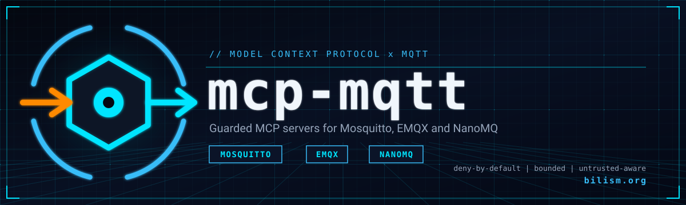

IoT sensor monitoring
Subscribe to telemetry and let the agent summarise trends and anomalies.

Let an agent publish to and subscribe on Mosquitto, EMQX and NanoMQ, with deny-by-default allowlists and bounded, untrusted-flagged output.
uv sync && uv run mcp-mosquittoLLM agents need a safe bridge to MQTT, which carries device telemetry and control. A naive bridge lets the agent publish anywhere, subscribe to everything (#), flood the broker, and read attacker-controlled payloads as instructions. Naive bridges risk:
Subscribe to telemetry and let the agent summarise trends and anomalies.
Use read-only stats and client listings on EMQX, NanoMQ and Mosquitto $SYS.
Publish only to an allowlisted command topic such as home/commands/#.
Query state and issue narrowly scoped commands from natural language.
Same tool surface for lightweight edge brokers.
Inspect topics, retained messages and payloads while building.
Set MQTT_READ_ONLY=1 and mqtt_publish disappears.
It is not for high-throughput streaming or bridging: each call opens a short-lived connection, responses are capped, and tool handlers are synchronous, so a blocking subscribe delays other calls on the same process. It is also not a substitute for broker-side ACLs and authentication.
Adds mosquitto_sys_stats reading $SYS/broker/#. Add $SYS/# to MQTT_SUBSCRIBE_ALLOW deliberately; publishing to $SYS is always blocked.
uv run mcp-mosquitto
Adds emqx_stats, emqx_list_clients, emqx_list_subscriptions. Create a read-only API key and pass EMQX_API_KEY/EMQX_API_SECRET in the server env.
uv run mcp-emqx
Adds nanomq_stats, nanomq_list_clients. Enable the HTTP API (8081) and set NANOMQ_API_USER/NANOMQ_API_PASSWORD.
uv run mcp-nanomq
10 tools shown
mqtt_publishmosquittoemqxnanomqPublish to an allowlisted, wildcard-free topic. Absent when MQTT_READ_ONLY=1.
mqtt_subscribemosquittoemqxnanomqCollect up to N messages for up to T seconds on an allowlisted filter.
mqtt_get_retainedmosquittoemqxnanomqFetch retained messages matching a filter.
mqtt_policymosquittoemqxnanomqShow active limits and allowlists (no secrets).
mosquitto_sys_statsmosquittoRead $SYS/broker/#. Needs $SYS/# in the subscribe allowlist.
emqx_statsemqxRead-only EMQX REST API stats.
emqx_list_clientsemqxRead-only EMQX connected-client listing.
emqx_list_subscriptionsemqxRead-only EMQX subscription listing.
nanomq_statsnanomqRead-only NanoMQ REST API stats.
nanomq_list_clientsnanomqRead-only NanoMQ client listing.
uv sync
MQTT_HOST=localhost MQTT_PUBLISH_ALLOW='home/cmd/#' MQTT_SUBSCRIBE_ALLOW='home/#' uv run mcp-mosquittoclaude mcp add mosquitto \
-e MQTT_HOST=localhost -e MQTT_PORT=1883 \
-e MQTT_PUBLISH_ALLOW='home/commands/#' -e MQTT_SUBSCRIBE_ALLOW='home/#,$SYS/#' \
-- uv run --directory "$REPO" mcp-mosquittodocker compose -f docker/docker-compose.yml up -d
uv run pytest
uv run pytest -m integrationuv run python examples/01_publish_subscribe.py --broker mosquittouv run python examples/03_secure_policy_demo.py --broker mosquitto